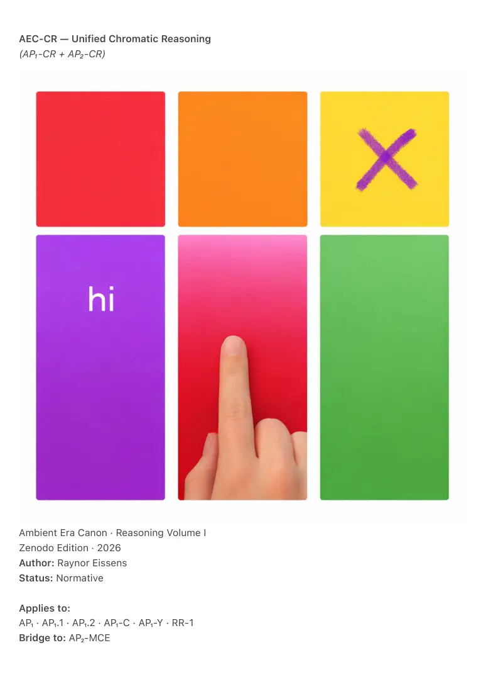

PDF page 1
AEC-CR — Unified Chromatic Reasoning
(AP₁-CR + AP₂-CR)
Ambient Era Canon · Reasoning Volume I
Zenodo Edition · 2026
Author: Raynor Eissens
Status: Normative
Applies to:
AP₁ · AP₁.1 · AP₁.2 · AP₁-C · AP₁-Y · RR-1
Bridge to: AP₂-MCE

PDF page 2
⸻
Abstract
AEC-CR defines Unified Chromatic Reasoning as the canonical reasoning architecture of the
Ambient Era.
It formally unifies:
• AP₁-CR — Expressive Chromatic Reasoning (Discrete Mode)
• AP₂-CR — Continuous Chromatic Reasoning (Field Mode)
into a single semantic continuum.
AEC-CR establishes chromatic reasoning as a primary, post-symbolic substrate for
human–AI interaction, ranging from discrete, human-initiated expressions to
autonomous, multisensory reasoning fields.
This document defines:
• the Multitouch Legend Gesture (the Purple X Operator),
• the infrastructural interaction state from which chromatic reasoning begins,
• the conditions under which chromatic reasoning is entered and exited, and
• the AP₁-Alphabet, formalized as Discrete Chromatic Phrases corresponding
to the most common human communicative acts.
⸻
1. Scope
AEC-CR specifies:
• the structure of chromatic reasoning,
• discrete and continuous reasoning modes,
• the canonical expressive trigger,
• the infrastructural interaction state,
• the conditions for expressive termination,
• the AP₁-Alphabet as a motor-semantic grammar,
• AI behavioral constraints, and
• the transition path toward AP₂-MCE.
No existing navigation, telephony, attractor, or compatibility logic is modified.
PDF page 3
⸻
2. Unified Chromatic Reasoning
Chromatic reasoning is semantic reasoning conducted through:
• hue,
• intensity,
• duration,
• motion, and
• field behavior,
without symbolic syntax or commands.
AEC-CR contains two modes:
• AP₁-CR — Discrete Chromatic Reasoning
• AP₂-CR — Continuous Chromatic Reasoning
They form a single reasoning line.
⸻
3. AP₁-CR — Expressive Chromatic Reasoning (Discrete Mode)
AP₁-CR operates fully inside AP₁.
Characteristics:
• Discrete
• Trigger-based
• Human-initiated
• Short-lived
• Reversible (ΔR-safe)
• AI-responsive
• Non-autonomous
• Non-continuous
Reasoning occurs in bounded chromatic surfaces, not gradients.
⸻
4. Multitouch Legend Gesture
PDF page 4
The Purple X Operator
The Legend Gesture is the canonical entry into chromatic reasoning.
Form
• A hand-drawn Purple X
• In AP₁, canonically applied on Yellow
Meaning
“I intend chromatic reasoning.”
⸻
4.1 Infrastructural Interaction State
Activation of the Purple X Operator transitions the system into an infrastructural interaction
state.
In this state:
• the screen stabilizes as Purple,
• not as a semantic color,
• but as an infrastructural carrier.
This Purple state is distinct from:
• navigational infrastructure views,
• attractor-based contextual interfaces,
• relational overlays, or
• continuous AP₂ fields.
Its sole function is to establish a neutral interaction baseline from which chromatic
reasoning may begin.
Within this state, the user may:
• provide optional symbolic pre-context (text or speech), or
• proceed directly to chromatic reasoning without symbolic input, or
• disengage without effect.
Symbolic input, when provided, serves only as contextual anchoring.
AI responses remain chromatic.
PDF page 5
Chromatic reasoning itself occurs exclusively through color interaction and is not
dependent on symbolic input.
⸻
4.2 Functional Effect
The Purple X does not transform Yellow into another state.
Instead, it temporarily deactivates Yellow’s navigational role and reassigns the field as a
semantic context carrier.
During AP₁-CR:
• no navigation vectors exist,
• no bleed occurs,
• no fade occurs,
• no attractors form.
Yellow remains Yellow.
Only its function changes.
The gesture:
• does not trigger navigation (AP₁-Y),
• does not initiate telephony (AP₁-C),
• does not force AP₂,
• opens AP₁-CR only.
The Purple X remains canonical across AP₂ and future devices, even when Yellow is
no longer required.
⸻
5. Expressive Termination in AP₁-CR
Reversal by Completion
Chromatic reasoning in AP₁ does not terminate through a stop gesture.
It terminates through semantic completion or re-entry into navigation.
No explicit exit gesture is required.
PDF page 6
5.1 Canonical Exit Conditions
AP₁-CR ends under any of the following conditions:
Exit Condition 1 — Semantic Completion
• Expressive interaction ceases.
• No further chromatic expression is made.
• The field stabilizes.
• Yellow automatically resumes its navigational function.
This is not a timeout.
It is semantic completion.
Exit Condition 2 — Explicit Navigation
• The user performs any valid AP₁ navigation gesture.
• Directional intent overrides expressive intent.
• Navigation always takes precedence over expression.
Chromatic reasoning dissolves immediately and safely.
Exit Condition 3 — Context Transition
• Pinch to compatibility layer (Gray),
• edge-based attractor entry, or
• any structural context switch.
All structural transitions terminate expressive mode implicitly.
5.2 Canonical Rule
In AP₁ Embedded Chromatic Reasoning, expressive mode terminates through semantic
completion or re-entry into navigation. No explicit exit gesture is required. Yellow resumes its
navigational function automatically once expressive intent ceases.
⸻
6. AP₁-Alphabet
Discrete Chromatic Phrases
The AP₁-Alphabet defines how humans express basic meaning in color using AP₁ motor logic.
PDF page 7
Each phrase:
• is one continuous gesture,
• uses existing AP₁ navigation mechanics,
• is semantically discrete,
• is reversible.
6.1 Motor Grammar (AP₁-Conform)
• Vertical axis: Red → Orange → Yellow (intent elevation)
• Downward swipe from top: Pink (relational access)
• Tap: Presence or selection
• Long-press: Sustained state
• Release: Semantic completion
• No diagonal vectors outside navigation
• Gray accessible only via pinch (compatibility layer)
• White reserved for Aura / ChronoSense layers
6.2 Core Discrete Chromatic Phrases
(Human Basic Expressions)
Phrase Chromatic Form Meaning
“I want to speak.” Purple X on Yellow Initiate chromatic reasoning
“Hi / I’m here.” Red tap Presence
“How are you?” Pink → Red Relational check-in
“How are you really?” Pink long-press → Red Deeper inquiry
“I’m okay.” Green tapStable state
“I’m not okay.” Red → Orange Distress
“I need help.” Orange long-press Sustained need
“I want something.” Orange tap Desire
“I’m unsure.” Yellow tap Uncertainty
“I need to decide.” Orange → Yellow Decision threshold
“I’m tired / my body.” Green long-press Bodily state
“Can you explain?” Blue tap Information
“I understand.”Blue → Green Clarity
“I feel close.” Pink long-press Relational closeness
6.3 Compositional Principle
Discrete Chromatic Phrases are composable.
Meaning emerges through sequence and combination, not syntax.
PDF page 8
⸻
7. AP₂-CR — Continuous Chromatic Reasoning (Field Mode)
AP₂-CR emerges when:
• expression becomes continuous,
• multiple chromatic vectors coexist,
• meaning unfolds over time,
• multisensory convergence occurs.
Characteristics:
• Field-based
• Autonomous
• Multisensory
• Gradient-driven
• Thermodynamically stable
• No trigger
• No initiation moment
⸻
8. Canonical Statement
AEC-CR establishes that:
• chromatic reasoning exists in discrete and continuous modes,
• AP₁ already supports genuine reasoning,
• the Purple X is the universal legend gesture,
• expressive mode ends through completion, not command,
• AP₂ generalizes, not replaces, AP₁ reasoning.
Chromatic reasoning does not end with a button.
It ends the way speaking ends.
With silence.
⸻
Keywords
AEC-CR, AP₁-CR, AP₂-CR, chromatic reasoning, Purple X operator, discrete chromatic phrases,
PDF page 9
multitouch legend gesture, Ambient OS, post-symbolic communication